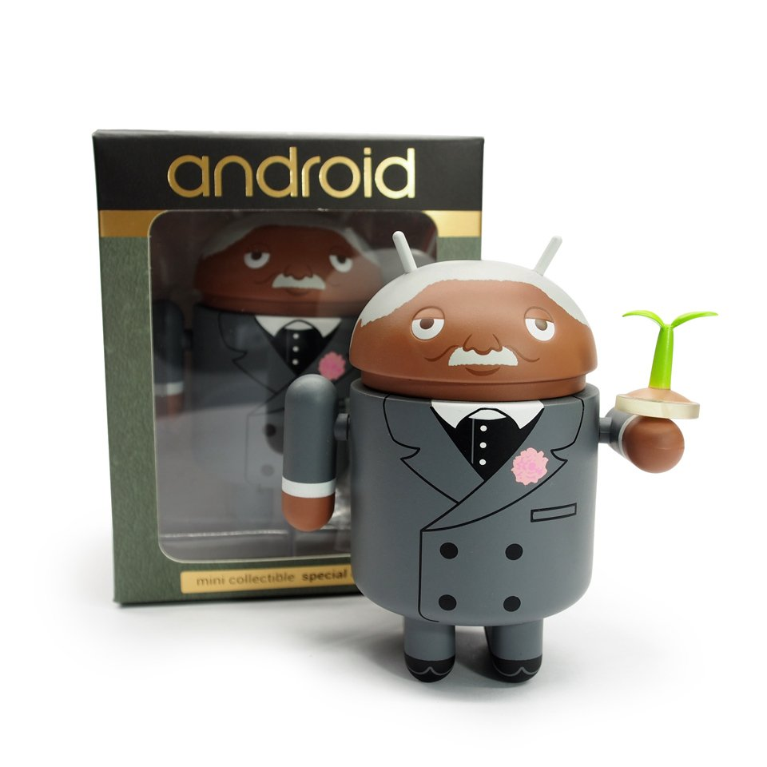
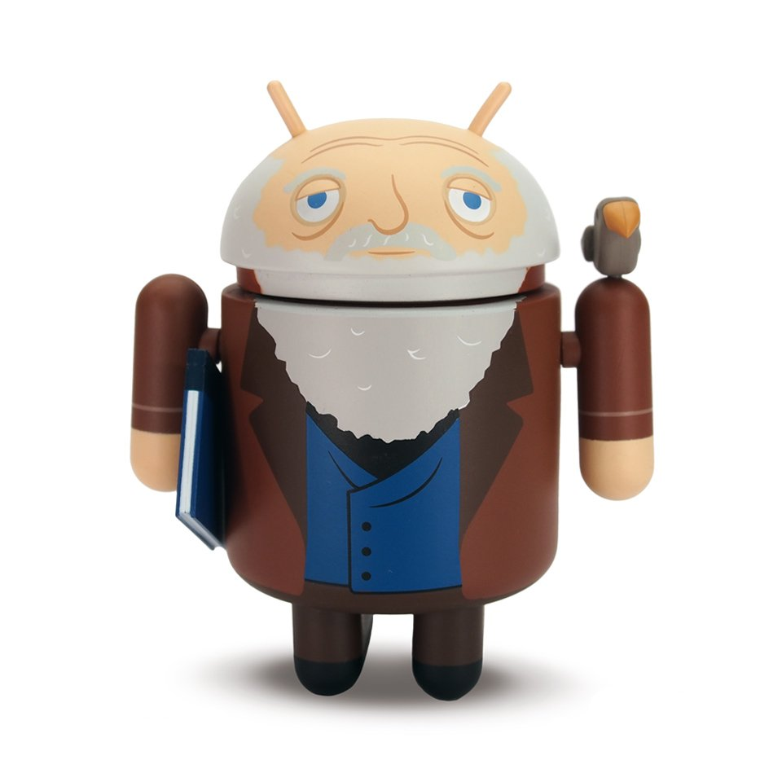
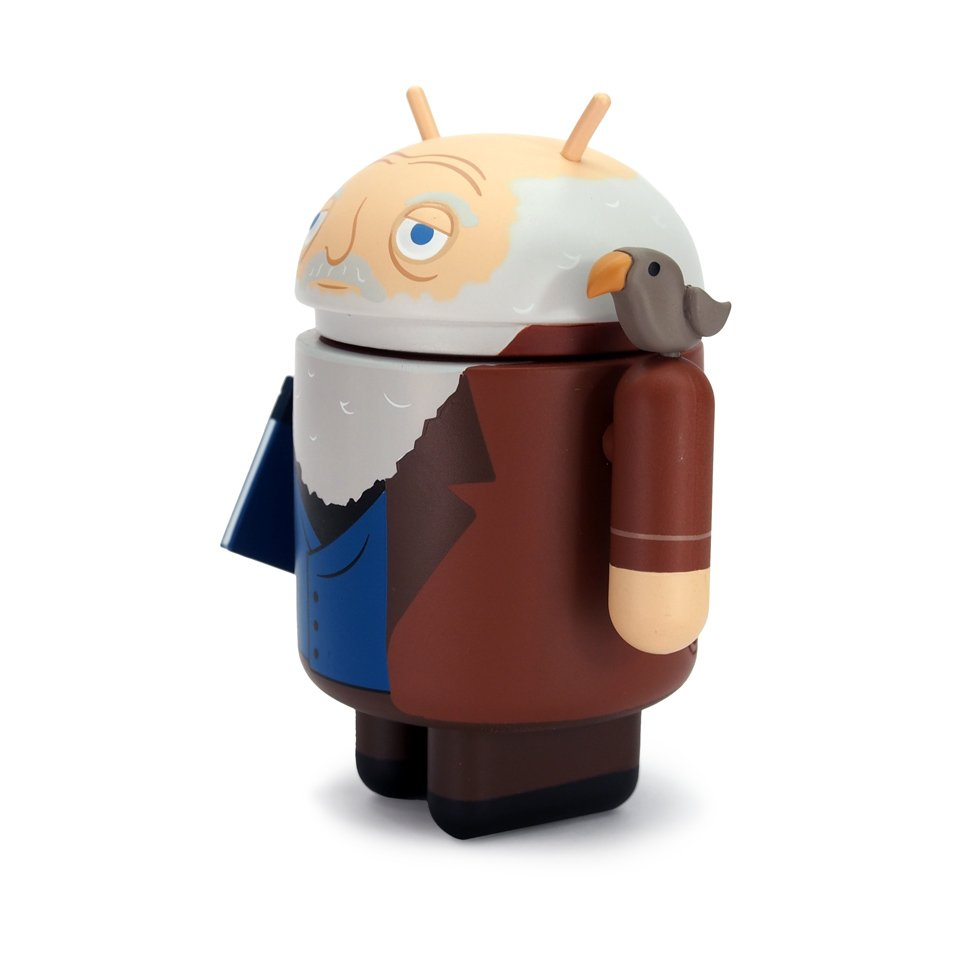
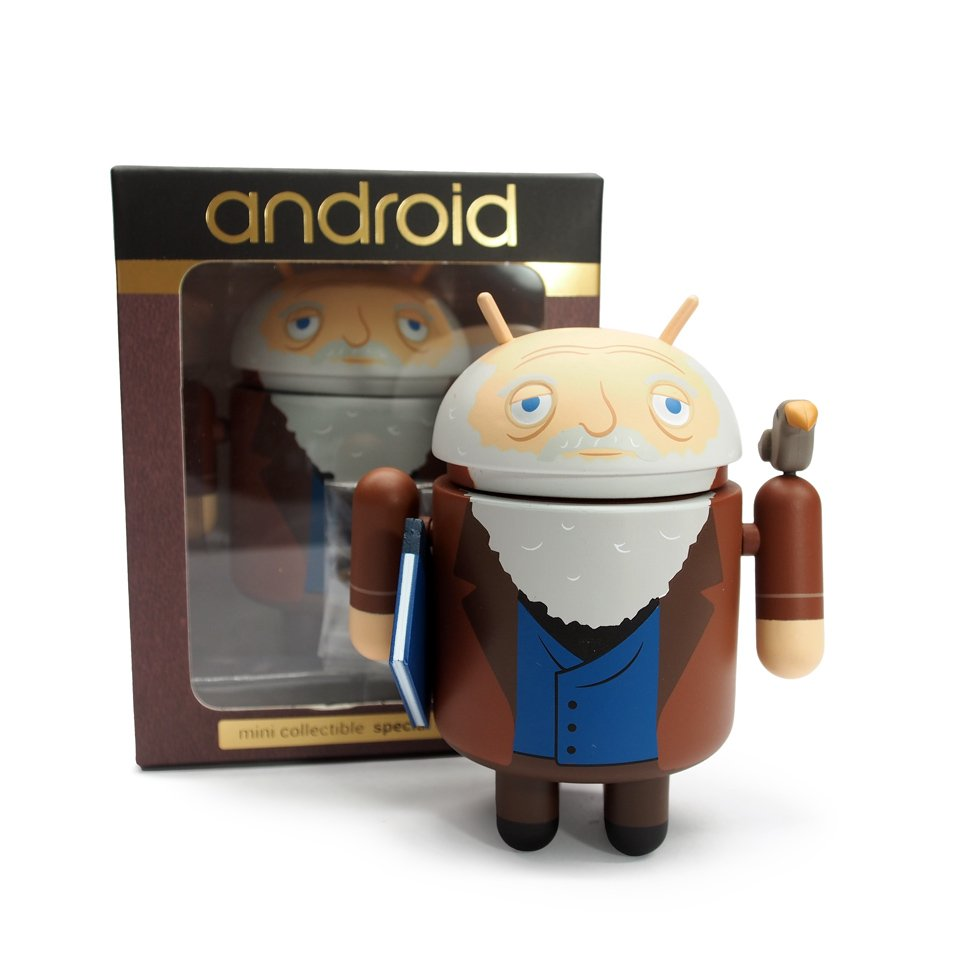

...for Science²! is a mini series of human-based figurines that used people with great contributions to science. Being a sequel to the original series, it has more great minds here. These are George Washington Carver, Charles Darwin, and Rosalind Franklin.
While they were all seperate releases, there was a full set option on the Dead Zebra Shop for convenience.
View original Dead Zebra Shop synopsis
Set:
“…for Science!” is a series of Android Mini Collectible special edition figures celebrating some of the greatest scientific minds in history.
Carver:
(c. 1864-1943) One of the foremost American botanists and inventors of his time, Carver promoted new approaches to farming, crops and even plastics!
- Includes mini plant accessory
Darwin:
(1809-1882) Darwin was an English naturalist with an interest in the diversity of plants and animals. He is best known for his contributions to the theories of natural selection and evolution.
- Includes mini finch accessory and 'On the Origin of Species' book accessory
Franklin:
(1920-1958) The English chemist's pioneering work with x-ray diffraction was critical to the discovery of the structure of DNA.
- Includes mini DNA model accessory.
- Full Name: Android Mini For Science Series 2- Set of 3, Android Mini For Science - George Washington Carver, Android Mini For Science - Charles Darwin, Android Mini For Science - Rosalind Franklin
- Companies: Dead Zebra, Dyzplastic
- Release Year: 2016
- Price: $30 ($10/each)
- View on Dead Zebra Projects (archived)
View individual figurines



